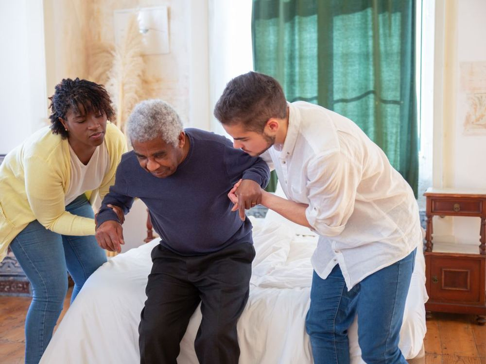

Saúde em boas mãos, no conforto do seu lar.
Assistência domiciliar especializada, com equipe multidisciplinar, tecnologia e cuidado humanizado para proporcionar mais segurança e qualidade de vida.

Cuidado especializado, onde você se sente melhor: em casa.
A Litoral Home Care é uma empresa especializada nos serviços de atenção domiciliar, oferecendo assistência completa aos pacientes no ambiente familiar.
Trabalhamos com equipamentos modernos e uma equipe multidisciplinar qualificada nas melhores práticas de saúde, utilizando protocolos atualizados que possibilitam segurança e eficiência dos serviços, integrando tecnologia a uma gestão experiente e comprometida, em busca constante de inovações.
Nosso compromisso é proporcionar segurança, eficiência e humanização em cada atendimento.
Mais do que assistência, compromisso com o cuidado.
- Equipe multidisciplinar qualificada
- Atendimento humanizado
- Protocolos atualizados
- Equipamentos modernos
- Acompanhamento individualizado
- Tecnologia aplicada à assistência
- Segurança e transparência
Assistência completa no ambiente familiar.
Conheça cada serviço
As informações têm caráter institucional. A indicação de cada procedimento depende de avaliação profissional individual.
Tecnologia que aproxima famílias e profissionais.
A Litoral Home Care utiliza recursos tecnológicos para proporcionar mais segurança, agilidade e transparência na prestação dos serviços. Seu sistema inteligente permite o acompanhamento das informações assistenciais pela família e pela operadora de saúde, com acesso via web e aplicativo.
Consulte nossa equipe sobre o acesso à plataforma.Levamos cuidado a quem precisa.
A Litoral Home Care mantém presença na Bahia, com atuação no Litoral Norte, Salvador e Região Metropolitana. A empresa também já apresentou planos estratégicos de expansão para outros estados do Nordeste.
Bahia
Precisa de assistência domiciliar?
Entre em contato com nossa equipe e conheça as possibilidades de atendimento da Litoral Home Care.
- Telefone / WhatsApp(71) 99315-7392
- E-mailcontato@litoralhomecare.com.br
- Instagram@litoralhomecare
- EndereçoLoteamento Praia de Imbassaí, Lote 04, Quadra 09, s/n, Imbassaí, Mata de São João – BA, CEP 48.580-000